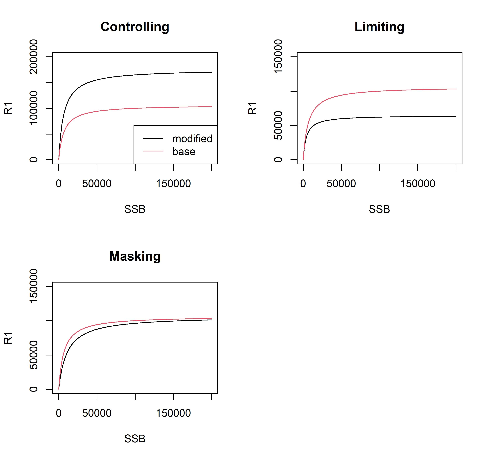

my_input = wham::prepare_wham_input(model_name = "Example_1",
basic_info = input_data,
NAA_re = list(), # NAA parameters
M = list(), # M parameter
selectivity = list(), # Selectivity parameter
catchability = list(), # Catchability parameter
ecov = list(), # Environmental information
# Crecimiento somatico:
growth = list(), LAA = list(), # Mean length-at-age
LW = list(), WAA = list(), # Mean weight-at-age
age_comp = "multinomial", # Age composition model
len_comp = "multinomial" # Length composition model
) Modelos avanzados en evaluación de recursos pesqueros: Día 5
Dr. Giancarlo M. Correa
Cousteau Consultant Group
WHAM: Variables ambientales
Introducción
Se usa el enfoque SSM para los procesos y observaciones:
- Se introducen observaciones que serán tratados como datos.
- Se estiman los procesos \(X_y\) a partir de las observaciones.
- Los procesos \(X_y\) son los que afectan al componente poblacional.
Se pueden incluir lags.
Introducción
Se puede estimar el error de observación.
Se pueden incluir múltiples variables.
Se puede tener años sin datos.
Se puede emplear para hacer proyecciones.
Process model
- Random walk (Miller, Hare, and Alade 2016):
\[X_{y+1} \mid X_y \sim N(X_y,\sigma_X^2)\]
\(\sigma_X^2\) es la varianza del proceso y \(X_1\) es estimado como efecto fijo.
Process model
- AR1 process (Miller, O’Brien, and Fratantoni 2018):
\[X_1 \sim N(\mu_X, \frac{\sigma_X^2}{1-\phi_X^2})\]
\[X_y \sim N(\mu_X(1-\phi_X) + \phi_XX_{y-1}, \sigma_X^2)\]
donde \(\mu_X\), \(\sigma_X^2\), y \(\mid \phi_X \mid < 1\) son la media marginal, varianza condicional, y parámetro de autocorrelación.
Observation model
Observaciones \(x_y\) son asumidas ser normalmente distribuidas con media \(X_y\) y varianza \(\sigma_{x_y}^2\) (para cada año):
\[x_y \mid X_y \sim N(X_y,\sigma^2_{x_y})\]
\(\sigma_{x_y}^2\) puede ser datos de entrada o puede ser estimada (tratado como efecto aleatorio):
\[\sigma_{x_y}^2 \sim N(\mu_{\sigma_x}, \sigma_{\sigma_x}^2)\]
Link to population
Puede impactar los siguientes componentes poblacionales:
- Reclutamiento (varias funciones de enlace)
- Capturabilidad
- Mortalidad natural
- Crecimiento
Link to recruitment
Tenemos las siguientes opciones:
- controlling: mortalidad independiente de la densidad
- limiting: efecto de capacidad de carga, \(X_y\) determina el suitable habitat
- masking: \(X_y\) reduce \(dR/SSB\), lo que sucede cuando \(X_y\) afecta metabolismo o crecimiento
Para una relación de Beverton-Holt, podemos usar las tres opciones. Para Ricker, solo podemos usar controlling o masking.
Link to recruitment
Las ecuaciones son las siguientes (Stock and Miller 2021):
Referencia sugerida: Pontavice et al. (2022)
Ejemplo
Para Beverton-Holt:
Link to natural mortality
Modifica \(M\) (para todas las edades):
\[M_{a,y} = \mu_{M_a}exp(\beta X_{y})\]
Similar formulación existe para capturabilidad. En general, veremos que esta relación puede variar (lineal o polinomial).
Link to somatic growth
Modificar cualquiera de los parámetros de todos los enfoques explorados:
\[G_{y} = \mu_{G}exp(\beta X_{y})\]
Para el caso de los enfoques no paramétricos, va a afectar a todas las edades por igual (\(\beta\) impacta todas las edades).
Funciones de link
Pueden ser lineales o polinomiales. Por ejemplo, se puede evaluar:
\[R_{y+1} = \frac{\alpha SSB_y}{1+exp(\beta_0 + \beta_1 X_y + \beta_2 X_y^2)SSB_y}\]
Para este caso, \(\alpha\) y \(\beta_0\) son los parámetros estándar de Beverton-Holt. \(\beta_1\) y \(\beta_2\) son los parámetros del efecto polinomial.
Definición en R
Definición en R
Definición en R
Enfoquemos solo la parte de variables ambientales:
my_input = wham::prepare_wham_input(...,
ecov = list(label = ..., # nombre de variable
mean = ..., # observations
logsigma = ..., # obs error (log scale)
year = ..., # years
use_obs = ..., # use/not use obs
lag = ..., # lag
process_model = ..., # process
where = ..., # what component to affect
where_subindex = ..., # parameter to affect
indices = ..., # index to affect
link_model = ..., # type link function
ages = ..., # ages to affect
how = ...), # special links
...)Definición en R
label: (character vector) Nombre de variables. Longitud igual al número de variables ambientales (nEcov).mean: (matrix numeric) Observaciones. Número de años (filas) por nEcov (columnas). Para valores faltantes ponerNA.year: (vector integer) Años (longitud igual al número de filas demean).use_obs: (matrix integer) Matriz especificando si usar o no la observación. Mismas dimensiones quemean.
Definición en R
logsigma: (matrix numeric) Matriz comomean, pero contiene errores de observación en escala log. Si se desea estimar, entonces no será una matriz, y debemos especificar:est_1: mismo valor para todos los añosest_re: valor distinto para cada año
lag: (vector integer) Lags. Longitud igual a nEcov.process_model: (character) Puede serrw(random walk) oar1(AR1 process).
Definición en R
where: (character vector) Longitud igual a nEcov. Puede ser'recruit','M','q','growth','LAA','LW', o'WAA'.where_subindex: (vector integer) parámetro que va a afectar Ecov (solo usado paragrowthoLW).indices: (list) Solo usado cuandowhere='q'. Longitud de lista igual a nEcov.
Definición en R
link_model: (vector character) Tipo de link. Longitud igual a nEcov. Opciones:none,linear,poly-x(dondexes el orden).ages: (list) Longitud igual a nEcov. Edades que afecta la variable ambiental.how: (vector integer) Longitud igual a nEcov. Tipo de link (especialmente para reclutamiento). Para reclutamiento tenemos:0= none,1= controlling,2= limiting,4= masking.
WHAM: Mortalidad por pesca
Enfoque en WHAM
Ya hemos visto como la mortalidad por pesca \(F\) impacta la abundancia de la población.
Más adelante veremos como \(F\) es utilizada para obtener las capturas.
En WHAM, \(F\) no tiene un argumento dentro de la función prepare_wham_input.
Enfoque en WHAM
Sin embargo, en la sección de datos, nosotros podemos especificar valores iniciales de \(F\) para cada pesquería:
Internamente, lo que WHAM calcula son diferencias de \(F\) (\(F_{y+1}-F_y\)), llamado \(F_{devs}\) y que son estimados como efectos fijos (única opción). El \(F\) inicial log_F1 es estimado como efecto fijo también.
WHAM: Fijar parámetros
Overview
Como hemos visto, desde prepare_wham_input podemos decidir los parámetros (efectos fijos) a estimar o fijar para los siguientes componentes:
- Mortalidad natural
- Selectividad
- Crecimiento somático
Overview
Sin embargo, no hay forma de manipular directamente esto para los efectos fijos de abundancia a la edad (i.e., reclutamiento), capturabilidad, ó variables ambientales. Además, no podemos manipular los parámetros cuando modelados desviaciones (e.g., iid, ar1, 2dar1).
Si queremos hacer esto, podemos usar my_input$map.
Ejemplo
Primero creamos el objeto de entrada para WHAM:
Ejemplo
my_input tiene 4 elementos importantes:
my_input$data: Organiza los datos como el código fuente de WHAM los necesita.my_input$par: Valores iniciales de parámetros.my_input$map: Parámetros (efectos fijos) que serán estimados. Siempre será vector tipo factor. Cuando veamos<NA>, significa que estará fijo. Cuando veamos algún número, significa que será estimado.my_input$random: Variable tratada como efectos aleatorios.
Overview
Como nos daremos cuenta, los elementos de my_input$par y my_input$map van a tener los mismos nombres.
Por ejemplo, nos daremos cuenta que existe my_input$par$M_a (valores iniciales de \(M\) en escala log), y también existe my_input$map$M_a. Se recomienda explorar todos los elementos de my_input$par y my_input$map para familiarizarse.
Ejemplo
Si queremos fijar \(\sigma_R\), podemos hacer de la siguiente forma:
Ejemplo
Si queremos fijar \(F_0\), en caso usemos \(R_{1,1}\) y \(F_0\) para calcular la población inicial, podemos hacerlo:
Ejemplo
Si queremos desactivar los efectos aleatorios, podemos hacerlo:
Esto último provocará que todo sea tratado como efectos fijos.
Importante
- Si se va a desactivar los efectos aleatorios, se recomienda no estimar los parámetros asociados a la estructura de las desviaciones (e.g., \(\sigma_R\), \(\rho_a\), \(\rho_y\), etc.).
WHAM: Correr un modelo
Overview
Para esto, utilizaremos el objeto my_input después de fijar o estimar los parámetros deseados. Luego:
fit_wham contiene más argumentos, pero los mostrados son los más relevantes.
Overview
do.sdrep: (logical) Invertir matriz hessiana y calcular errores estándar para los parámetros?. Default =TRUE.do.retro: (logical) Correr análisis retrospectivo?. Default =TRUE.n.peels: (integer) Número de peels sido.retro = TRUE. Default =7.
Overview
do.osa: (logical) Calcular one-step ahead residuals? Default =TRUE.do.proj: (logical) Hacer proyecciones? Default =FALSE.do.fit: (logical) Ajustar a los datos? Default =TRUE. Esto es útil cuando queremos testear nuestros parámetros iniciales o explorar la configuración del modelo.
Referencias

Miller, Timothy J., Jonathan A. Hare, and Larry A. Alade. 2016. “A State-Space Approach to Incorporating Environmental Effects on Recruitment in an Age-Structured Assessment Model with an Application to Southern New England Yellowtail Flounder.” Canadian Journal of Fisheries and Aquatic Sciences 73 (8): 1261–70. https://doi.org/10.1139/cjfas-2015-0339.
Miller, Timothy J., Loretta O’Brien, and Paula S. Fratantoni. 2018. “Temporal and Environmental Variation in Growth and Maturity and Effects on Management Reference Points of Georges Bank Atlantic Cod.” Canadian Journal of Fisheries and Aquatic Sciences 75 (12): 2159–71. https://doi.org/10.1139/cjfas-2017-0124.
Pontavice, Hubert du, Timothy J Miller, Brian C Stock, Zhuomin Chen, and Vincent S Saba. 2022. “Ocean Model-Based Covariates Improve a Marine Fish Stock Assessment When Observations Are Limited.” Edited by Manuel Hidalgo. ICES Journal of Marine Science 79 (4): 1259–73. https://doi.org/10.1093/icesjms/fsac050.
Stock, Brian C., and Timothy J. Miller. 2021. “The Woods Hole Assessment Model (WHAM): A General State-Space Assessment Framework That Incorporates Time- and Age-Varying Processes via Random Effects and Links to Environmental Covariates.” Fisheries Research 240 (August): 105967. https://doi.org/10.1016/j.fishres.2021.105967.